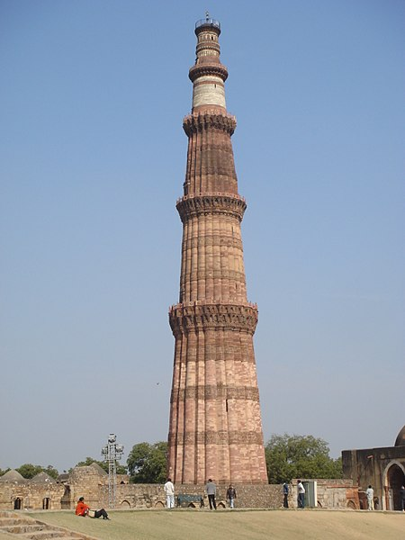

HOME
Qutub Minar

About
Qutub Minar is a minaret that forms part of the Qutb complex, a UNESCO World Heritage Site in the Mehrauli area of Delhi, India.
Made of red sandstone and marble, Qutub Minar is a 73-metre (240 feet) tall tapering tower of five storeys, with a 14.3 metre (47 feet) base diameter, reducing to 2.7 metres (9 feet) at the peak.
It contains a spiral staircase of 379 steps. Its design is thought to have been based on the Minaret of Jam, in western Afghanistan.
Qutb Ud-Din-Aibak, founder of the Delhi Sultanate, started construction of the Qutub Minar's first storey around 1192.
In 1220, Aibak's successor and son-in-law Iltutmish completed a further three storeys. In 1369, a lightning strike destroyed the top storey. Firoz Shah Tughlaq replaced the damaged storey, and added one more.
The Minar is surrounded by several historically significant monuments of the Qutb complex,
including Quwwat-ul-Islam Mosque, which was built at the same time as the Minar, and the much older Iron Pillar of Delhi. The nearby pillared Cupola known as "Smith's Folly" is a remnant of the tower's 19th century restoration,
which included an ill-advised attempt to add a sixth storey.